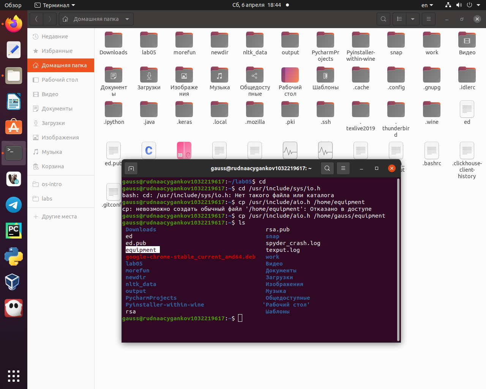
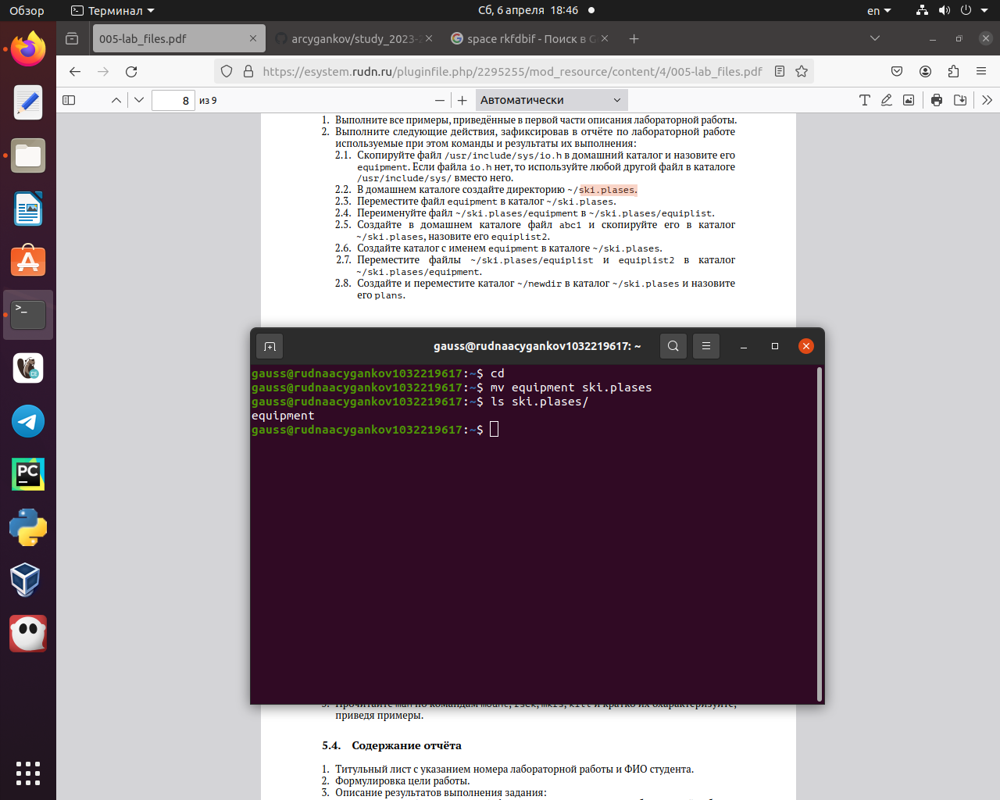
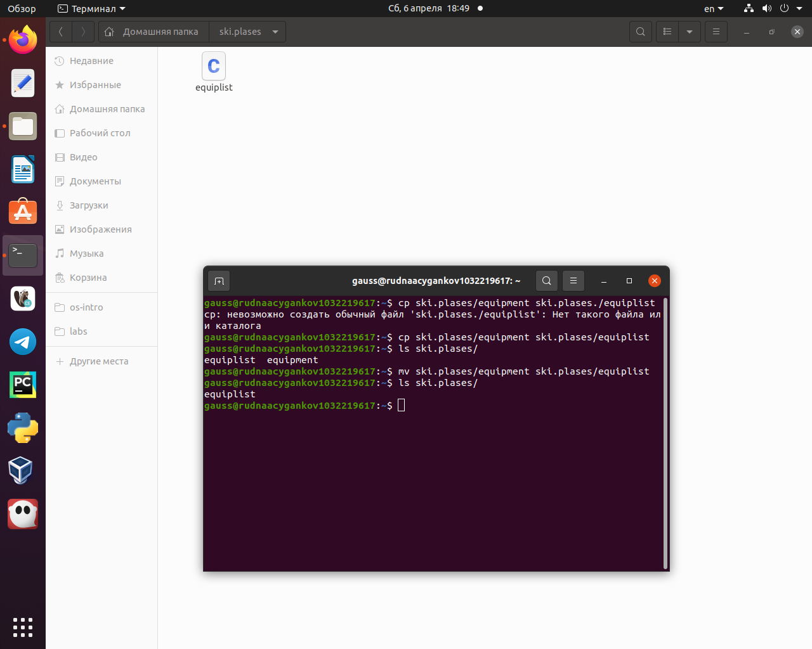
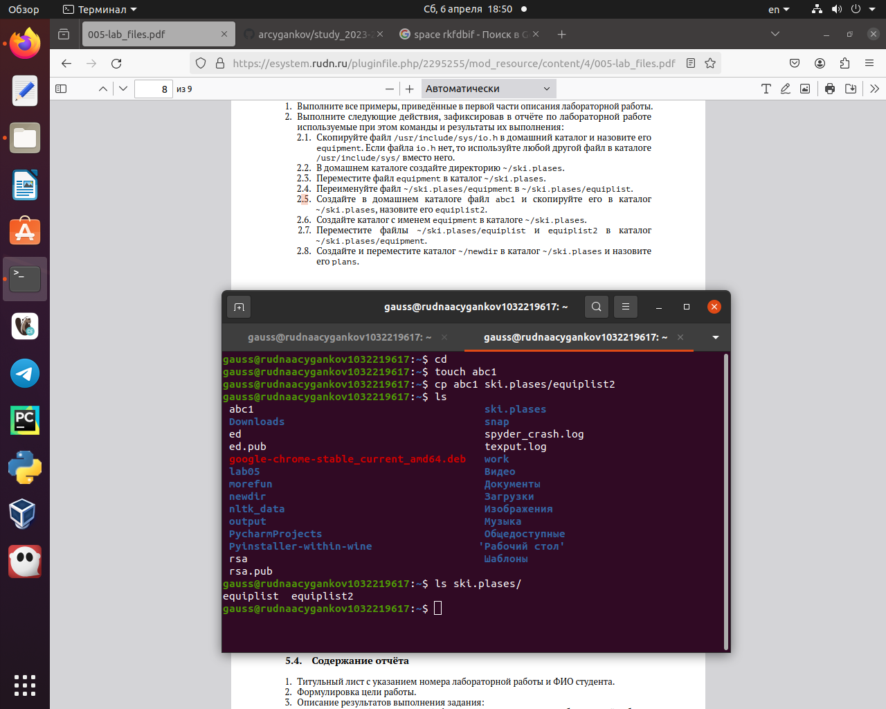
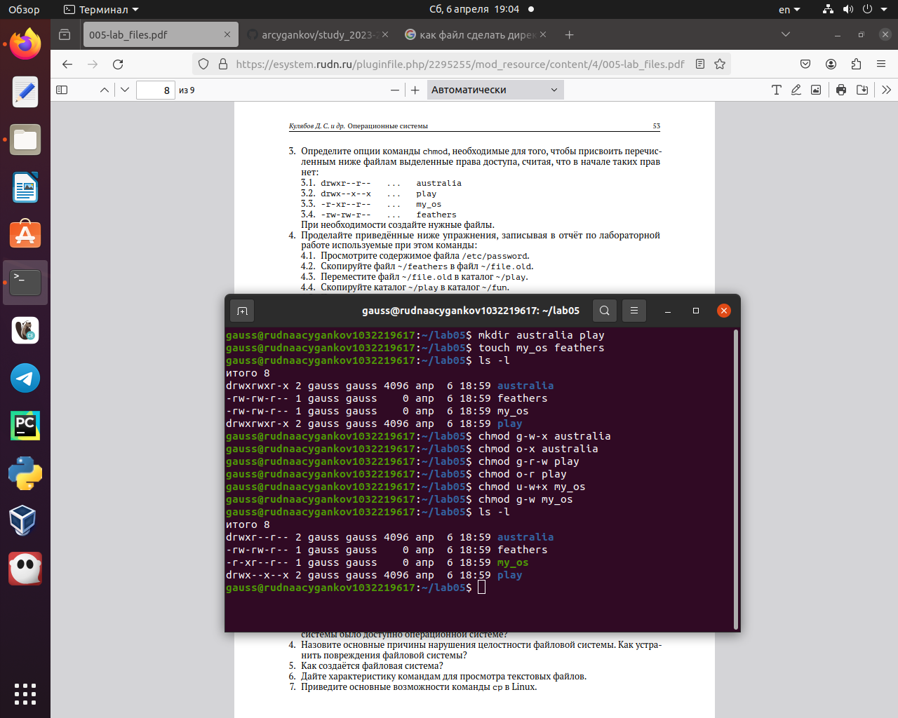
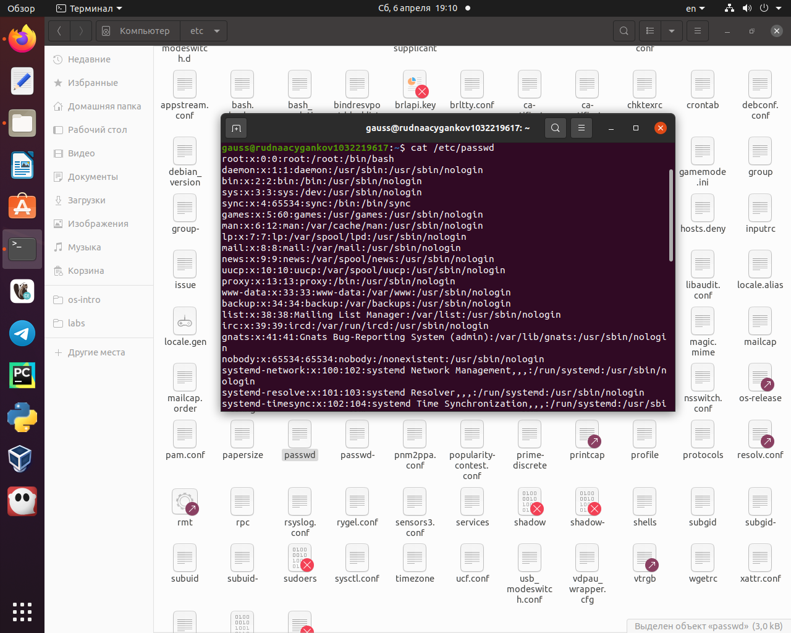
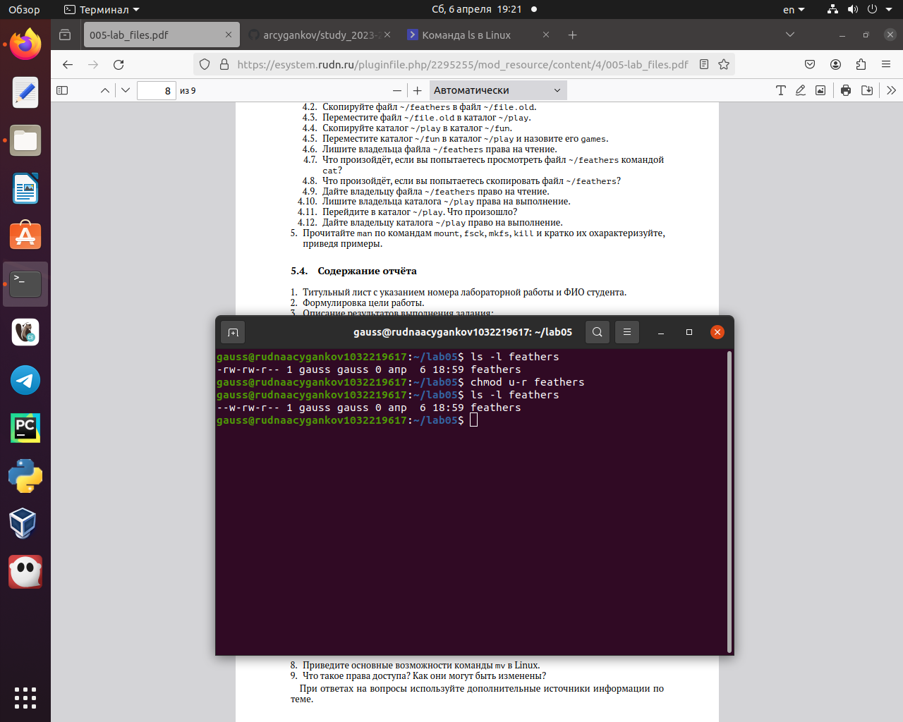
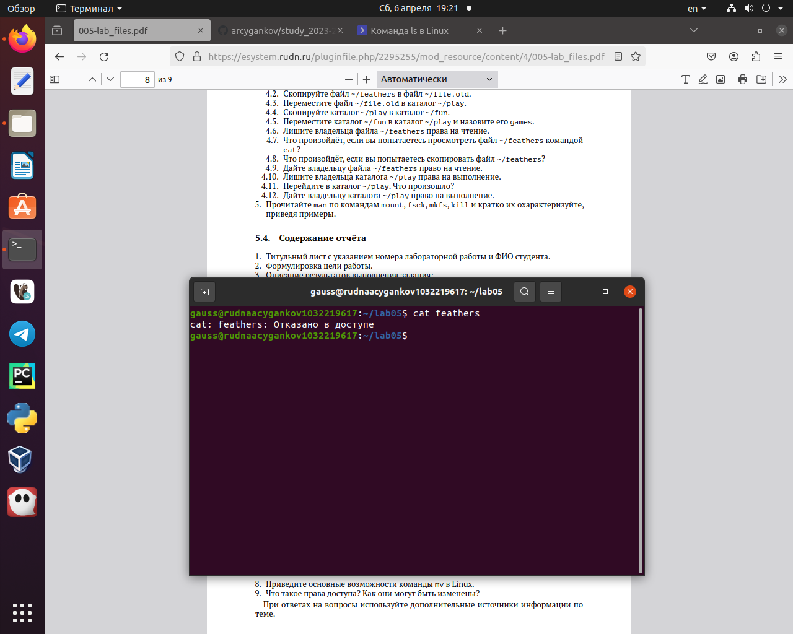
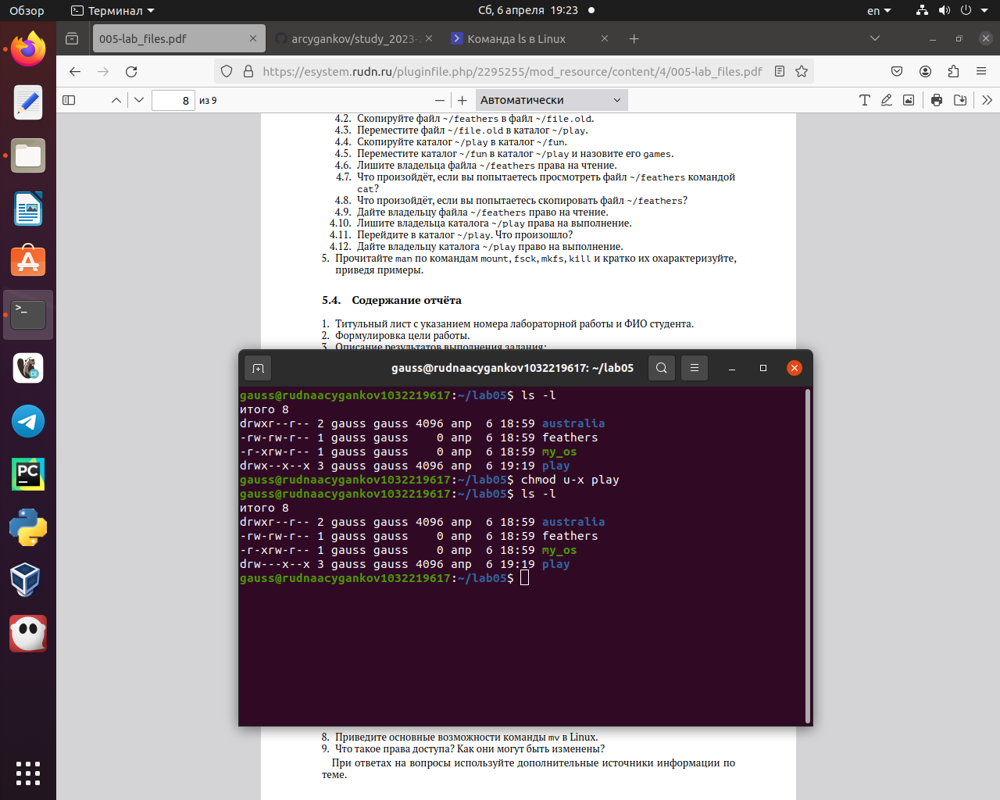

Умение работать с файловой системой - одно из основных умений при освоении ОС Linux.
Объект и предмет исследования
Команды для работы с файлами и каталогами.
Цели и задачи
Ознакомление с файловой системой Linux, её структурой, именами и содержанием каталогов. Приобретение практических навыков по применению команд для работы с файлами и каталогами, по управлению процессами (и работами), по проверке использования диска и обслуживанию файловой системы.
Выполнение заданий.
Скопировать файл /usr/include/sys/io.h в домашний каталог и назвать его equipment
Копирование файла
Переместить файл equipment в каталог ~/ski.plases
Перемещаю файл equipment в каталог ~/ski.plases
Переименовать файл ~/ski.plases/equipment в ~/ski.plases/equiplist
~/ski.plases/equipment в ~/ski.plases/equiplist
Создать каталог с именем equipment в каталоге ~/ski.plases
Каталог с именем equipment в каталоге ~/ski.plases
Определить опции команды chmod, необходимые для того, чтобы присвоить перечисленным ниже файлам выделенные права доступа
drwxr–r–…australia
Просмотреть содержимое файла /etc/password
/etc/password
Лишить владельца файла ~/feathers права на чтение. Что произойдёт, если попытаться просмотреть файл ~/feathers командой cat? Что произойдёт, если попытаться скопировать файл ~/feathers? Дать владельцу файла ~/feathers право на чтение
~/feathers
После лишения владельца прав на чтение файла не получится ни просмотреть его, ни скопировать
try
Лишить владельца каталога ~/play права на выполнение. Перейти в каталог ~/play. Что произошло? Дать владельцу каталога ~/play право на выполнение
Лишить владельца каталога ~/play права на выполнение. Перейти в каталог ~/play.
Если лишить владельца каталога права на выполнение, то не получится больше перейти в этот каталог.
try
Результаты
Вывод:
В ходе выполнения этой лабораторной я изучил файловую систему Linux, структуру её каталогов и файлов. Приобрел практические навыки по применению команд для работы с файлами и каталогами, по управлению правами доступа каталогов и файлов.